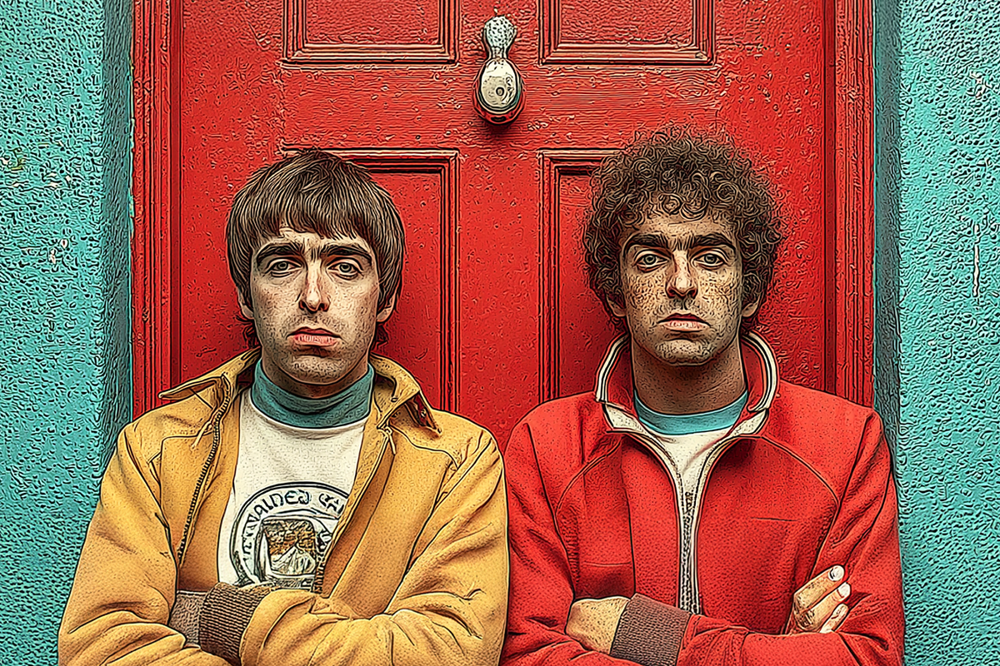
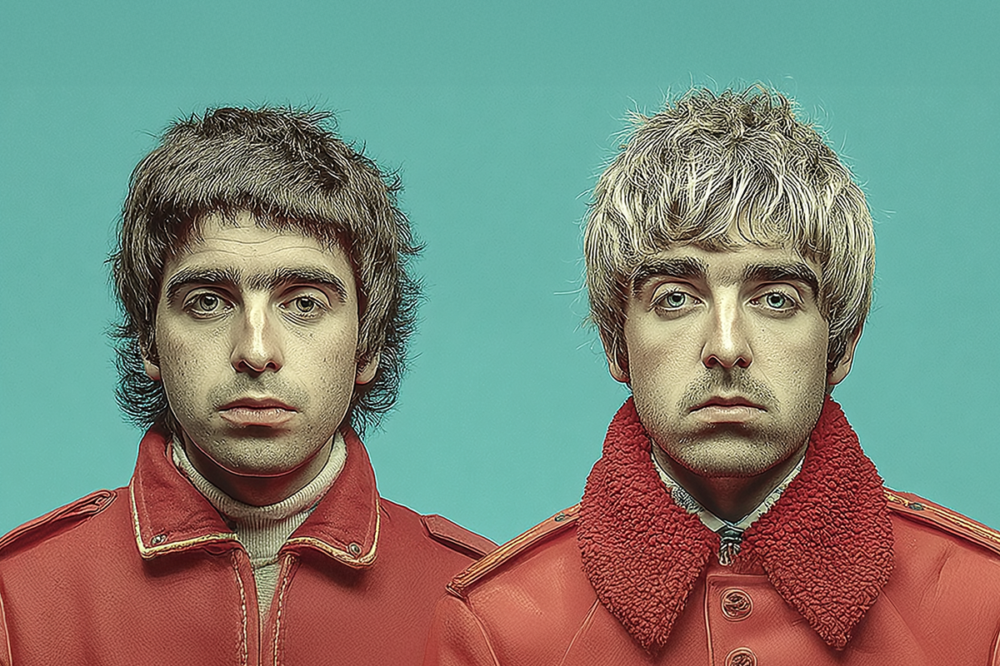
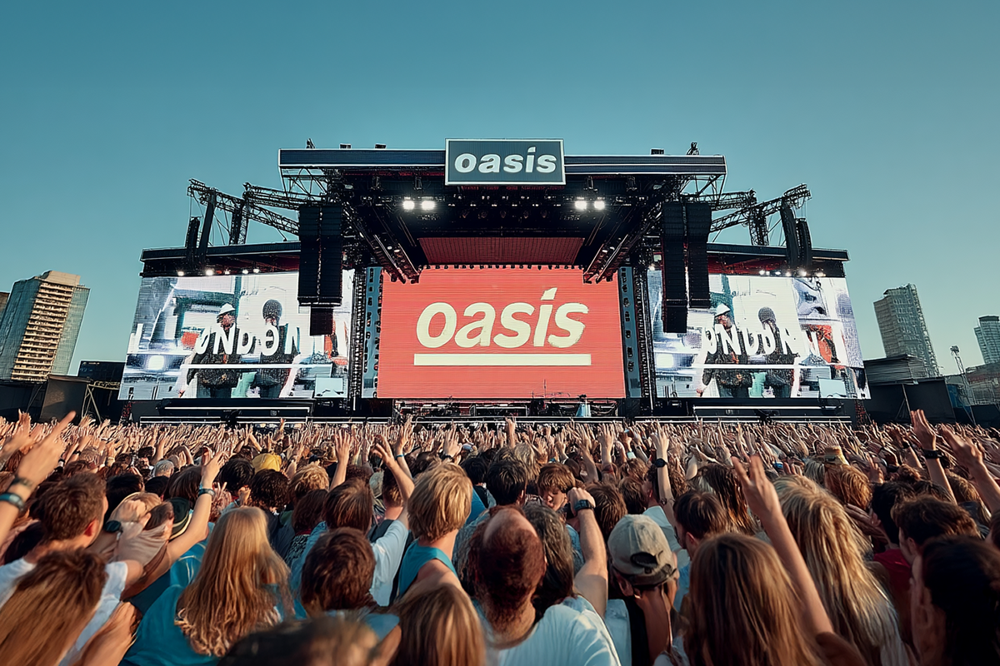

El City de OASIS
Amor de amores, esta es la identidad del Manchester City en Oasis
Amor de amores, esta es la identidad del Manchester City en Oasis

Llegó el momento de celebrar para los amantes de los cuatro acordes, de aquellos que aprendieron a tocar la guitarra con “Wonderwall” y de quienes se animaban a agarrar un instrumento para darle un toque artístico a alguna convivencia. Oasis, la mítica banda del britpop, ha decidido volver a los escenarios después de varias décadas de ausencia y tras un supuesto reencuentro entre sus dos protagonistas, históricamente conocidos por su eterna rivalidad: los hermanos Gallagher.
El grupo, que tuvo sus inicios en la música a principios de los 90’s, dio en puntapié inicial a su tour mundial de estadios, el que ya realizó sus primeras fechas con un éxito absoluto (lo que era muy de esperar) los pasados 4 y el 5 de julio en Gales. Un real calentamiento para algunas de sus fechas más importantes, las que tuvieron lugar en Manchester, ciudad adorada por los Gallagher, y Londres, ambas con 5 fechas por ciudad.
La primera patita de su gira Live ’25 está en pleno desarrollo, y se extenderá por todo el Reino Unido e Irlanda, antes de dar el pase a sus fechas en América del Norte, otras nuevas fechas en Inglaterra, Asia, Australia y, finalmente, rematan en América del Sur, donde Argentina, Chile y Brasil se coronan como el cierre de este tour, uno que, para muchos, podría tratarse del último del grupo. Los tabloides, sin embargo, han llegado a un consenso intrínseco: los conciertos más memorables de lo que va de gira, son los cinco que tuvieron al Manchester City como protagonista.

Se sabe que Oasis y su coreable discografía marcaron un hito en la historia de la música, transformándose en iconos absolutos de los años 90’s. Pero hay un tema en común, identitario, y que sobrepasa la fama artística con respecto a la trayectoria de la banda, y ese es el amor que sienten por su natal Manchester, ciudad que, gracias a ellos, llegó a transformarse en una marca que viene junto a su nombre.
Pero, ¿cómo pasó una ciudad a convertirse en una oda a la nostalgia y en el emblema de una generación? Manchester no solo fue cuna de Oasis, ciudad que vio nacer al grupo incluso antes de llamarse de esa forma, si no que en sus territorios también se gestaron otras numerosas bandas insignes de los 80’s y 90’s, como The Smiths, Joy División y The Stone Roses, lo que ya genera una mítica sobre la influencia e identidad de aquella ciudad.
“Madchester” fue el apodo que se le dio a este territorio al norte de Inglaterra durante aquellos años, justamente por ser el lugar predilecto para la aparición de numerosas bandas relevantes que armaron una nueva escena musical de orden no solo nacional, sino que mundial. Es que mientras Seattle en Estados Unidos era la cuna del grunge en los 90’s, Manchester le hacía la segunda con un nuevo sonido, propio de sus territorios: el britpop, el que apareció como una respuesta más amable al oscuro rock alternativo inglés de los 80’s. ¿Y quiénes fueron los principales exponentes de este género? Justamente Oasis y Blur, quienes desde siempre fueron pintados como rivales acérrimos: mientras Oasis representaba el lado más proletario, rockero y sencillo de la ciudad, Blur parecía ser un grupo más colorido, ambicioso, y más pop dentro de un rock más dinámico.
Entonces, para gustos, colores. Cada quien –y hasta el día de hoy– tiene a su grupo favorito de britpop, aunque claro que no fueron los únicos exponentes del género. Si hablamos del contexto Madchester, tampoco podemos olvidarnos de la Haçienda, discoteca que abrió sus puertas a inicios de los años 80’s y que le dio la exposición necesaria a un montón de bandas emergentes de la época. El nacimiento de este lugar terminó siendo la piedra angular para la reconocida escena musical inglesa que se desarrolló en las próximas dos décadas.

Lo que sí debemos diferenciar, es que la relación de Oasis con estos territorios va un poco más allá de lo convencional, o de lo que se puede esperar de otra banda y su relación con sus calles, sus comunidades y cómo esto puede permear su sonido o su estilo.
El Manchester tiene algo distinto a otras ciudades, y es que su gente es orgullosa de haber nacido allí, de compartir una historia afín, de la cultura que se ha formado y que ha construido a su pueblo hasta lo que son hoy en día. Y si hay una forma de representar este amor a través de la pasión, es el fútbol. Y uno de los equipos más importantes, es aquel que lleva su nombre: el Manchester City. No nos equivoquemos, la verdad es que los dos grandes equipos de la ciudad llevan el “Manchester” como bandera de lucha. Sin embargo, el Manchester City siempre parecía estar por debajo de su archirrival Manchester United, club que le hacía la sombra al históricamente más humilde City.
La historia del City tiene similitudes con la banda de los hermanos Gallagher y el grupo también fue claro en mostrar su amor por la camiseta. Hasta el día de hoy, Oasis y el Manchester City son términos inseparables, y se han guiñado y apoyado con cariño por décadas. Aquí es cuando damos un vuelco más contemporáneo al asunto, cuando hablamos de las colaboraciones que han dado a los fans nuevos motivos para revivir el cariño y fanatismo, tan intrínsecos de las bandas de estadio y los equipos de fútbol.

El año pasado, la banda y el Manchester City hicieron una colaboración que le voló la cabeza a los fanáticos de este deporte y a los seguidores del grupo: por el aniversario número 30 del clásico disco “Definitely Maybe”, ambos gigantes lanzaron la colaboración de una camiseta especial del equipo de los amores. Esta camiseta no es solo merch, sino una declaración de amor y fidelidad a Manchester. Une dos cosas que marcaron a fuego la historia cultural de la ciudad—la música de Oasis y la pasión futbolera—en una prenda que respira años 90’s. Los detalles no están sujetos al azar, ya que remiten al disco aniversario, a las parkas gastadas, a las tribunas y a esas tardes grises caminando por la ciudad.
Mirando hacia atrás, con todo lo que ha sucedido en los últimos años con respecto a la banda, con las entrevistas y las colaboraciones, se siente algo tonto no habernos dado cuenta de que nos encontrábamos frente a frente con una sorpresa enorme, una que no solo dejó entusiasmados a los fans, sino que a los seguidores de la música. ¿Es que cuándo nos íbamos a imaginar que los hermanos Gallagher estarían nuevamente juntos en un escenario, reviviendo junto a sus fans los días más hermosos de nuestras vidas? Por eso, y con más claridad que nunca, es que tanto ellos como nosotros viviremos para siempre.
 Cultura
CulturaSé que suena raro hablar de calor extremo mientras en Chile todos están buscando la parka más gruesa del clóset.
 Cultura
CulturaEl hecho de que estemos entrando al mes de julio no se puede creer. Pero lo que tampoco se puede creer es la cantidad de artistas que han…
 Cultura
CulturaCuando hablamos de trabajos clásicos de la música chilena, siempre se nombran los discos de Violeta Parra, Víctor Jara, Los Jaivas o…